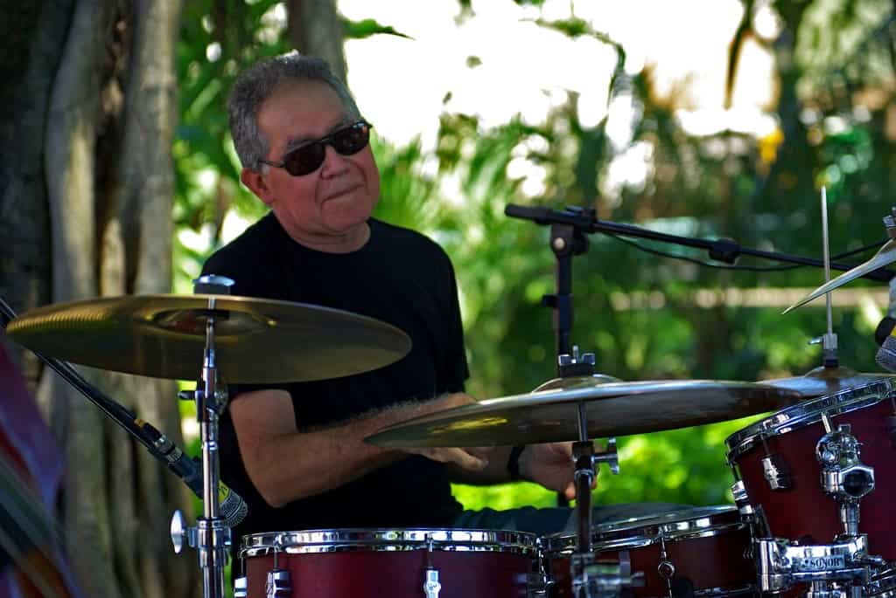

LUIZINHO DUARTE
Luizinho Duarte, natural de Fortaleza-CE, é músico, compositor, arranjador, baterista e violonista. Autodidata, iniciou sua carreira aos dezesseis anos de idade, tocando em grupos de baile. Como instrumentista, revela uma técnica apurada a favor dos recursos de dinâmica. Uma peculiaridade é seu fraseado de extrema clareza, no qual a complexidade surpreende em favor da primazia do swing na execução. Gravou e tocou com nomes marcantes da música brasileira como Tim Maia, Elsa Soares, Fagner, Zeca Baleiro, Johnny Alf, Leila Pinheiro, Zezé Mota, Maria Bethânia, Dominguinhos, Toninho Horta, Amelinha e Ednardo, entre outros. Participou como instrumentista de uma centena de discos produzidos no estado do Ceará, além de arranjar e assinar a direção musical de outros diversos álbuns. Como compositor, suas canções foram gravadas por importantes intérpretes como Paulinho Pedra Azul, Adriano Giffoni, Roberto Marques e a Orquestra Pernambucana de Frevos. Em 1999 fundou com amigos o quarteto instrumental “Marimbanda”, com a gravação do primeiro CD no ano 2000, quando foi selecionado para participar do Prêmio Visa da Música Instrumental Brasileira. O segundo álbum do quarteto, viria em 2005 com o título “Tente descobrir”. Em 2003 foi reconhecido com o título de instrumentista notório saber pelo Curso de Música da Universidade Estadual do Ceará-UECE. Participou como comentarista da revista Modern Drummer nas edições de junho e julho de 2004. Em fevereiro de 2009 ministra curso de bateria na Escola Superior de Música de Antuérpia (Bélgica), realizando turnês na França e Bélgica em cinco concertos com o grupo Marimbanda e lança no mesmo ano, seu álbum autoral “Garimpo”. Atualmente Luizinho Duarte trabalha no projeto Uirapuru, do artista plástico Tércio Araripe, na comunidade Moita Redonda em Cascavel-CE com um grupo de percussão em cerâmica agraciado por prêmios da Fundação Nacional das Artes. Prêmios e Intercâmbios: Projeto Bec Seis e Meia – TJA (1994-1997); Prêmio Visa de Música Instrumental Brasileira (2000); Notório Saber do Curso de Música da Universidade Estadual do Ceará-UECE (2003); Turnê SESC Brasil de Música Instrumental (2004); Comentarista da revista Modern Drummer (2004); Professor de bateria na Escola Superior de Música de Antuérpia-Bélgica (2009); Turnês pela Europa com concertos do quarteto Marimbanda (2009); Lançamento do álbum autoral “Garimpo” (2009). Fonte: Bateria Brasil
Partituras
 Luizinho Duarte - Choro da Consolação
Luizinho Duarte - Choro da Consolação